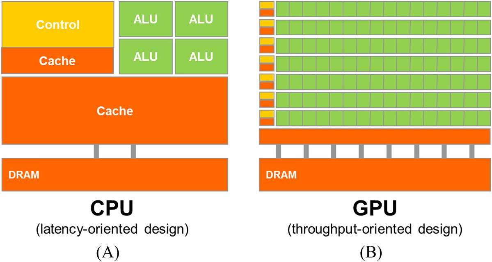
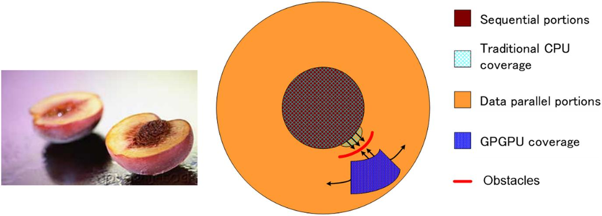

This chapter introduces the book by first giving an account of the historic events that pushed heterogeneous parallel computing into the mainstream. It distinguishes between latency-oriented multicore CPUs and throughput oriented many-thread GPUs, the two main styles of computing devices in modern heterogeneous computing systems. The chapter then goes into the main reasons for applications to demand more speed and the Amdahl’s law, an important observation about the parallelization of real application. It then explains how the book addresses the main challenges in parallel algorithms and parallel programming and how the skills that have been learned from the book based on CUDA, the language of choice for programming examples, and exercises in this book can be generalized into other parallel programming interfaces. Finally, the chapter highlights the overarching goals for the book and the contents and rationales of the rest of the chapters.
Parallel computing; heterogeneous computing; GPU computing; high-performance computing; parallel programming; parallel algorithms; parallel patterns; throughput-oriented design; latency-oriented design; Amdahl’s law; scalability; data parallelism; memory bandwidth; performance optimization; work efficiency; data characteristics; work distribution; embarrassingly parallel applications; synchronization; computational thinking; parallel programming languages; parallel programming models; programmer productivity; supercomputing; MPI; OpenMP
Ever since the beginning of computing, many high-valued applications have demanded more execution speed and resources than the computing devices can offer. Early applications rely on the advancement of processor speed, memory speed, and memory capacity to enhance application-level capabilities such as the timeliness of weather forecasts, the accuracy of engineering structural analyses, the realism of computer-generated graphics, the number of airline reservations processed per second, and the number of fund transfers processed per second. More recently, new applications such as deep learning have demanded even more execution speed and resources than the best computing devices can offer. These application demands have fueled fast advancement in computing device capabilities in the past five decades and will continue to do so in the foreseeable future.
Microprocessors based on a single central processing unit (CPU) that appear to execute instructions in sequential steps, such as those in the×86 processors from Intel and AMD, armed with fast increasing clock frequency and hardware resources, drove rapid performance increases and cost reductions in computer applications in the 1980s and 1990s. During the two decades of growth, these single-CPU microprocessors brought GFLOPS, or giga (109) floating-point operations per second, to the desktop and TFLOPS, or tera (1012) floating-point operations per second, to data centers. This relentless drive for performance improvement has allowed application software to provide more functionality, have better user interfaces, and generate more useful results. The users, in turn, demand even more improvements once they become accustomed to these improvements, creating a positive (virtuous) cycle for the computer industry.
However, this drive has slowed down since 2003, owing to energy consumption and heat dissipation issues. These issues limit the increase of the clock frequency and the productive activities that can be performed in each clock period within a single CPU while maintaining the appearance of executing instructions in sequential steps. Since then, virtually all microprocessor vendors have switched to a model in which multiple physical CPUs, referred to as processor cores, are used in each chip to increase the processing power. A traditional CPU can be viewed as a single-core CPU in this model. To benefit from the multiple processor cores, users must have multiple instruction sequences, whether from the same application or different applications, that can simultaneously execute on these processor cores. For a particular application to benefit from multiple processor cores, its work must be divided into multiple instruction sequences that can simultaneously execute on these processor cores. This switch from a single CPU executing instructions in sequential steps to multiple cores executing multiple instruction sequences in parallel has exerted a tremendous impact on the software developer community.
Traditionally, the vast majority of software applications are written as sequential programs that are executed by processors whose design was envisioned by von Neumann in his seminal report in 1945 (von Neumann et al., 1972). The execution of these programs can be understood by a human as sequentially stepping through the code based on the concept of a program counter, also known as an instruction pointer in the literature. The program counter contains the memory address of the next instruction that will be executed by the processor. The sequence of instruction execution activities resulting from this sequential, stepwise execution of an application is referred to as a thread of execution, or simply thread, in the literature. The concept of threads is so important that it will be more formally defined and used extensively in the rest of this book.
Historically, most software developers relied on the advances in hardware, such as increased clock speed and executing multiple instructions under the hood, to increase the speed of their sequential applications; the same software simply runs faster as each new processor generation is introduced. Computer users also grew to expect that these programs run faster with each new generation of microprocessors. This expectation has not been valid for over a decade. A sequential program will run on only one of the processor cores, which will not become significantly faster from generation to generation. Without performance improvement, application developers will no longer be able to introduce new features and capabilities into their software as new microprocessors are introduced; this reduces the growth opportunities of the entire computer industry.
Rather, the application software that will continue to enjoy significant performance improvement with each new generation of microprocessors will be parallel programs, in which multiple threads of execution cooperate to complete the work faster. This new, dramatically escalated advantage of parallel programs over sequential programs has been referred to as the concurrency revolution (Sutter and Larus, 2005). The practice of parallel programming is by no means new. The high-performance computing (HPC) community has been developing parallel programs for decades. These parallel programs typically ran on expensive large-scale computers. Only a few elite applications could justify the use of these computers, thus limiting the practice of parallel programming to a small number of application developers. Now that all new microprocessors are parallel computers, the number of applications that need to be developed as parallel programs has increased dramatically. There is now a great need for software developers to learn about parallel programming, which is the focus of this book.
Since 2003 the semiconductor industry has settled on two main trajectories for designing microprocessors (Hwu et al., 2008). The multicore trajectory seeks to maintain the execution speed of sequential programs while moving into multiple cores. The multicores began with two-core processors, and the number of cores has increased with each semiconductor process generation. A recent example is a recent Intel multicore server microprocessor with up to 24 processor cores, each of which is an out-of-order, multiple instruction issue processor implementing the full ×86 instruction set, supporting hyperthreading with two hardware threads, designed to maximize the execution speed of sequential programs. Another example is a recent ARM Ampere multicore server processor with 128 processor cores.
In contrast, the many-thread trajectory focuses more on the execution throughput of parallel applications. The many-thread trajectory began with a large number of threads, and once again, the number of threads increases with each generation. A recent exemplar is the NVIDIA Tesla A100 graphics processing unit (GPU) with tens of thousands of threads, executing in a large number of simple, in-order pipelines. Many-thread processors, especially GPUs, have led the race of floating-point performance since 2003. As of 2021, the peak floating-point throughput of the A100 GPU is 9.7 TFLOPS for 64-bit double-precision, 156 TFLOPS for 32-bit single-precision, and 312 TFLOPS for 16-bit half-precision. In comparison, the peak floating-point throughput of the recent Intel 24-core processor is 0.33 TLOPS for double-precision and 0.66 TFLOPS for single-precision. The ratio of peak floating-point calculation throughput between many-thread GPUs and multicore CPUs has been increasing for the past several years. These are not necessarily application speeds; they are merely the raw speeds that the execution resources can potentially support in these chips.
Such a large gap in peak performance between multicores and many-threads has amounted to a significant “electrical potential” buildup, and at some point, something will have to give. We have reached that point. To date, this large peak performance gap has already motivated many applications developers to move the computationally intensive parts of their software to GPUs for execution. Perhaps even more important, the drastically elevated performance of parallel execution has enabled revolutionary new applications such as deep learning that are intrinsically composed of computationally intensive parts. Not surprisingly, these computationally intensive parts are also the prime target of parallel programming: When there is more work to do, there is more opportunity to divide the work among cooperating parallel workers, that is, threads.
One might ask why there is such a large peak performance gap between many-threaded GPUs and multicore CPUs. The answer lies in the differences in the fundamental design philosophies between the two types of processors, as illustrated in Fig. 1.1. The design of a CPU, as shown in Fig. 1.1A, is optimized for sequential code performance. The arithmetic units and operand data delivery logic are designed to minimize the effective latency of arithmetic operations at the cost of increased use of chip area and power per unit. Large last-level on-chip caches are designed to capture frequently accessed data and convert some of the long-latency memory accesses into short-latency cache accesses. Sophisticated branch prediction logic and execution control logic are used to mitigate the latency of conditional branch instructions. By reducing the latency of operations, the CPU hardware reduces the execution latency of each individual thread. However, the low-latency arithmetic units, sophisticated operand delivery logic, large cache memory, and control logic consume chip area and power that could otherwise be used to provide more arithmetic execution units and memory access channels. This design approach is commonly referred to as latency-oriented design.

The design philosophy of the GPUs, on the other hand, has been shaped by the fast-growing video game industry, which exerts tremendous economic pressure for the ability to perform a massive number of floating-point calculations and memory accesses per video frame in advanced games. This demand motivates GPU vendors to look for ways to maximize the chip area and power budget dedicated to floating-point calculations and memory access throughput.
The need for performing a massive number of floating-point calculations per second in graphics applications for tasks such as viewpoint transformations and object rendering is quite intuitive. Additionally, the need for performing a massive number of memory accesses per second is just as important and perhaps even more important. The speed of many graphics applications is limited by the rate at which data can be delivered from the memory system into the processors and vice versa. A GPU must be capable of moving extremely large amounts of data into and out of graphics frame buffers in its DRAM (dynamic random-access memory) because such movement is what makes video displays rich and satisfying to gamers. The relaxed memory model (the way in which various system software, applications, and I/O devices expect their memory accesses to work) that is commonly accepted by game applications also makes it easier for the GPUs to support massive parallelism in accessing memory.
In contrast, general-purpose processors must satisfy requirements from legacy operating systems, applications, and I/O devices that present more challenges to supporting parallel memory accesses and thus make it more difficult to increase the throughput of memory accesses, commonly referred to as memory bandwidth. As a result, graphics chips have been operating at approximately 10 times the memory bandwidth of contemporaneously available CPU chips, and we expect that GPUs will continue to be at an advantage in terms of memory bandwidth for some time.
An important observation is that reducing latency is much more expensive than increasing throughput in terms of power and chip area. For example, one can double the arithmetic throughput by doubling the number of arithmetic units at the cost of doubling the chip area and power consumption. However, reducing the arithmetic latency by half may require doubling the current at the cost of more than doubling the chip area used and quadrupling the power consumption. Therefore the prevailing solution in GPUs is to optimize for the execution throughput of massive numbers of threads rather than reducing the latency of individual threads. This design approach saves chip area and power by allowing pipelined memory channels and arithmetic operations to have long latency. The reduction in area and power of the memory access hardware and arithmetic units allows the GPU designers to have more of them on a chip and thus increase the total execution throughput. Fig. 1.1 visually illustrates the difference in the design approaches by showing a smaller number of larger arithmetic units and a smaller number of memory channels in the CPU design in Fig. 1.1A, in contrast to the larger number of smaller arithmetic units and a larger number of memory channels in Fig. 1.1B.
The application software for these GPUs is expected to be written with a large number of parallel threads. The hardware takes advantage of the large number of threads to find work to do when some of them are waiting for long-latency memory accesses or arithmetic operations. Small cache memories in Fig. 1.1B are provided to help control the bandwidth requirements of these applications so that multiple threads that access the same memory data do not all need to go to the DRAM. This design style is commonly referred to as throughput-oriented design, as it strives to maximize the total execution throughput of a large number of threads while allowing individual threads to take a potentially much longer time to execute.
It should be clear that GPUs are designed as parallel, throughput-oriented computing engines, and they will not perform well on some tasks on which CPUs are designed to perform well. For programs that have one or very few threads, CPUs with lower operation latencies can achieve much higher performance than GPUs. When a program has a large number of threads, GPUs with higher execution throughput can achieve much higher performance than CPUs. Therefore one should expect that many applications use both CPUs and GPUs, executing the sequential parts on the CPU and the numerically intensive parts on the GPUs. This is why the Compute Unified Device Architecture (CUDA) programming model, introduced by NVIDIA in 2007, is designed to support joint CPU-GPU execution of an application.
It is also important to note that speed is not the only decision factor when application developers choose the processors for running their applications. Several other factors can be even more important. First and foremost, the processors of choice must have a very large presence in the marketplace, referred to as the installed base of the processor. The reason is very simple. The cost of software development is best justified by a very large customer population. Applications that run on a processor with a small market presence will not have a large customer base. This has been a major problem with traditional parallel computing systems that have negligible market presence compared to general-purpose microprocessors. Only a few elite applications that are funded by the government and large corporations have been successfully developed on these traditional parallel computing systems. This has changed with many-thread GPUs. Because of their popularity in the PC market, GPUs have been sold by the hundreds of millions. Virtually all desktop PCs and high-end laptops have GPUs in them. There are more than 1 billion CUDA-enabled GPUs in use to date. Such a large market presence has made these GPUs economically attractive targets for application developers.
Another important decision factor is practical form factors and easy accessibility. Until 2006, parallel software applications ran on data center servers or departmental clusters. But such execution environments tend to limit the use of these applications. For example, in an application such as medical imaging, it is fine to publish a paper based on a 64-node cluster machine. But actual clinical applications on Magnetic Resonance Imaging (MRI) machines have been based on some combination of a PC and special hardware accelerators. The simple reason is that manufacturers such as GE and Siemens cannot sell MRIs that require racks of computer server boxes in clinical settings, while this is common in academic departmental settings. In fact, the National Institutes of Health (NIH) refused to fund parallel programming projects for some time; they believed that the impact of parallel software would be limited because huge cluster-based machines would not work in the clinical setting. Today, many companies ship MRI products with GPUs, and the NIH funds research using GPU computing.
Until 2006, graphics chips were very difficult to use because programmers had to use the equivalent of graphics API (application programming interface) functions to access the processing units, meaning that OpenGL or Direct3D techniques were needed to program these chips. Stated more simply, a computation must be expressed as a function that paints a pixel in some way in order to execute on these early GPUs. This technique was called GPGPU, for general purpose programming using a GPU. Even with a higher-level programming environment, the underlying code still needs to fit into the APIs that are designed to paint pixels. These APIs limit the kinds of applications that one can actually write for early GPUs. Consequently, GPGPU did not become a widespread programming phenomenon. Nonetheless, this technology was sufficiently exciting to inspire some heroic efforts and excellent research results.
Everything changed in 2007 with the release of CUDA (NVIDIA, 2007). CUDA did not represent software changes alone; additional hardware was added to the chip. NVIDIA actually devoted silicon area to facilitate the ease of parallel programming. In the G80 and its successor chips for parallel computing, GPGPU programs no longer go through the graphics interface at all. Instead, a new general-purpose parallel programming interface on the silicon chip serves the requests of CUDA programs. The general-purpose programming interface greatly expands the types of applications that one can easily develop for GPUs. All the other software layers were redone as well so that the programmers can use the familiar C/C++ programming tools.
While GPUs are an important class of computing devices in heterogeneous parallel computing, there are other important types of computing devices that are used as accelerators in heterogeneous computing systems. For example, field-programmable gate arrays have been widely used to accelerate networking applications. The techniques covered in this book using GPUs as the learning vehicle also apply to the programming tasks for these accelerators.
As we stated in Section 1.1, the main motivation for massively parallel programming is for applications to enjoy continued speed increases in future hardware generations. As we will discuss in the chapters on parallel patterns, advanced patterns, and applications (Parts II and III, Chapters 7 through 19), when an application is suitable for parallel execution, a good implementation on a GPU can achieve a speed up of more than 100 times over sequential execution on a single CPU core. If the application includes what we call “data parallelism,” it is often possible to achieve a 10× speedup with just a few hours of work.
One might ask why applications will continue to demand increased speed. Many applications that we have today seem to be running quite fast enough. Despite the myriad of computing applications in today’s world, many exciting mass market applications of the future are what we previously considered supercomputing applications, or superapplications. For example, the biology research community is moving more and more into the molecular level. Microscopes, arguably the most important instrument in molecular biology, used to rely on optics or electronic instrumentation. However, there are limitations to the molecular-level observations that we can make with these instruments. These limitations can be effectively addressed by incorporating a computational model to simulate the underlying molecular activities with boundary conditions set by traditional instrumentation. With simulation we can measure even more details and test more hypotheses than can ever be imagined with traditional instrumentation alone. These simulations will continue to benefit from increasing computing speeds in the foreseeable future in terms of the size of the biological system that can be modeled and the length of reaction time that can be simulated within a tolerable response time. These enhancements will have tremendous implications for science and medicine.
For applications such as video and audio coding and manipulation, consider our satisfaction with digital high-definition (HD) TV in comparison to older NTSC TV. Once we experience the level of details in the picture on an HDTV, it is very hard to go back to older technology. But consider all the processing that is needed for that HDTV. It is a highly parallel process, as are three-dimensional (3D) imaging and visualization. In the future, new functionalities such as view synthesis and high-resolution display of low-resolution videos will demand more computing power in the TV. At the consumer level, we will begin to see an increasing number of video and image-processing applications that improve the focus, lighting, and other key aspects of the pictures and videos.
Among the benefits that are offered by more computing speed are much better user interfaces. Smartphone users now enjoy a much more natural interface with high-resolution touch screens that rival a large-screen TV. Undoubtedly, future versions of these devices will incorporate sensors and displays with 3D perspectives, applications that combine virtual and physical space information for enhanced usability, and voice and computer vision–based interfaces, requiring even more computing speed.
Similar developments are underway in consumer electronic gaming. In the past, driving a car in a game was simply a prearranged set of scenes. If your car bumped into an obstacle, the course of your vehicle did not change; only the game score changed. Your wheels were not bent or damaged, and it was no more difficult to drive, even if you lost a wheel. With increased computing speed, the games can be based on dynamic simulation rather than prearranged scenes. We can expect to experience more of these realistic effects in the future. Accidents will damage your wheels, and your online driving experience will be much more realistic. The ability to accurately model physical phenomena has already inspired the concept of digital twins, in which physical objects have accurate models in the simulated space so that stress testing and deterioration prediction can be thoroughly conducted at much lower cost. Realistic modeling and simulation of physics effects are known to demand very large amounts of computing power.
An important example of new applications that have been enabled by drastically increased computing throughput is deep learning based on artificial neural networks. While neural networks have been actively researched since the 1970s, they have been ineffective in practical applications because it takes too much labeled data and too much computation to train these networks. The rise of the Internet offered a tremendous number of labeled pictures, and the rise of GPUs offered a surge of computing throughput. As a result, there has been a fast adoption of neural network–based applications in computer vision and natural language processing since 2012. This adoption has revolutionized computer vision and natural language processing applications and triggered fast development of self-driving cars and home assistant devices.
All the new applications that we mentioned involve simulating and/or representing a physical and concurrent world in different ways and at different levels, with tremendous amounts of data being processed. With this huge quantity of data, much of the computation can be done on different parts of the data in parallel, although they will have to be reconciled at some point. In most cases, effective management of data delivery can have a major impact on the achievable speed of a parallel application. While techniques for doing so are often well known to a few experts who work with such applications on a daily basis, the vast majority of application developers can benefit from a more intuitive understanding and practical working knowledge of these techniques.
We aim to present the data management techniques in an intuitive way to application developers whose formal education may not be in computer science or computer engineering. We also aim to provide many practical code examples and hands-on exercises that help the reader to acquire working knowledge, which requires a practical programming model that facilitates parallel implementation and supports proper management of data delivery. CUDA offers such a programming model and has been well tested by a large developer community.
How much speedup can we expect from parallelizing an application? The definition of speedup for an application by computing system A over computing system B is the ratio of the time used to execute the application in system B over the time used to execute the same application in system A. For example, if an application takes 10 seconds to execute in system A but takes 200 seconds to execute in System B, the speedup for the execution by system A over system B would be 200/10=20, which is referred to as a 20× (20 times) speedup.
The speedup that is achievable by a parallel computing system over a serial computing system depends on the portion of the application that can be parallelized. For example, if the percentage of time spent in the part that can be parallelized is 30%, a 100× speedup of the parallel portion will reduce the total execution time of the application by no more than 29.7%. That is, the speedup for the entire application will be only about 1/(1−0.297)=1.42×. In fact, even infinite amount of speedup in the parallel portion can only slash 30% off the execution time, achieving no more than 1.43× speedup. The fact that the level of speedup that one can achieve through parallel execution can be severely limited by the parallelizable portion of the application is referred to as Amdahl’s Law (Amdahl, 2013). On the other hand, if 99% of the execution time is in the parallel portion, a 100× speedup of the parallel portion will reduce the application execution to 1.99% of the original time. This gives the entire application a 50× speedup. Therefore it is very important that an application has the vast majority of its execution in the parallel portion for a massively parallel processor to effectively speed up its execution.
Researchers have achieved speedups of more than 100× for some applications. However, this is typically achieved only after extensive optimization and tuning after the algorithms have been enhanced so that more than 99.9% of the application work is in the parallel portion.
Another important factor for the achievable level of speedup for applications is how fast data can be accessed from and written to the memory. In practice, straightforward parallelization of applications often saturates the memory (DRAM) bandwidth, resulting in only about a 10× speedup. The trick is to figure out how to get around memory bandwidth limitations, which involves doing one of many transformations to utilize specialized GPU on-chip memories to drastically reduce the number of accesses to the DRAM. However, one must further optimize the code to get around limitations such as limited on-chip memory capacity. An important goal of this book is to help the reader to fully understand these optimizations and become skilled in using them.
Keep in mind that the level of speedup that is achieved over single-core CPU execution can also reflect the suitability of the CPU to the application. In some applications, CPUs perform very well, making it harder to speed up performance using a GPU. Most applications have portions that can be much better executed by the CPU. One must give the CPU a fair chance to perform and make sure that the code is written so that GPUs complement CPU execution, thus properly exploiting the heterogeneous parallel computing capabilities of the combined CPU/GPU system. As of today, mass market computing systems that combine multicore CPUs and many-core GPUs have brought terascale computing to laptops and exascale computing to clusters.
Fig. 1.2 illustrates the main parts of a typical application. Much of a real application’s code tends to be sequential. These sequential parts are illustrated as the “pit” area of the peach; trying to apply parallel computing techniques to these portions is like biting into the peach pit—not a good feeling! These portions are very hard to parallelize. CPUs tend to do a very good job on these portions. The good news is that although these portions can take up a large portion of the code, they tend to account for only a small portion of the execution time of superapplications.

Then come what we call the “peach flesh” portions. These portions are easy to parallelize, as are some early graphics applications. Parallel programming in heterogeneous computing systems can drastically improve the speed of these applications. As illustrated in Fig. 1.2, early GPGPU programming interfaces cover only a small portion of the peach flesh section, which is analogous to a small portion of the most exciting applications. As we will see, the CUDA programming interface is designed to cover a much larger section of the peach flesh of exciting applications. Parallel programming models and their underlying hardware are still evolving at a fast pace to enable efficient parallelization of even larger sections of applications.
What makes parallel programming hard? Someone once said that if you do not care about performance, parallel programming is very easy. You can literally write a parallel program in an hour. But then why bother to write a parallel program if you do not care about performance?
This book addresses several challenges in achieving high performance in parallel programming. First and foremost, it can be challenging to design parallel algorithms with the same level of algorithmic (computational) complexity as that of sequential algorithms. Many parallel algorithms perform the same amount of work as their sequential counterparts. However, some parallel algorithms do more work than their sequential counterparts. In fact, sometimes they may do so much more work that they ended up running slower for large input datasets. This is especially a problem because fast processing of large input datasets is an important motivation for parallel programming.
For example, many real-world problems are most naturally described with mathematical recurrences. Parallelizing these problems often requires nonintuitive ways of thinking about the problem and may require redundant work during execution. There are important algorithm primitives, such as prefix sum, that can facilitate the conversion of sequential, recursive formulation of the problems into more parallel forms. We will more formally introduce the concept of work efficiency and will illustrate the methods and tradeoffs that are involved in designing parallel algorithms that achieve the same level of computational complexity as their sequential counterparts, using important parallel patterns such as prefix sum in Chapter 11, Prefix Sum (Scan).
Second, the execution speed of many applications is limited by memory access latency and/or throughput. We refer to these applications as memory bound; by contrast, compute bound applications are limited by the number of instructions performed per byte of data. Achieving high-performance parallel execution in memory-bound applications often requires methods for improving memory access speed. We will introduce optimization techniques for memory accesses in Chapter 5, Memory Architecture and Data Locality and Chapter 6, Performance Considerations, and will apply these techniques in several chapters on parallel patterns and applications.
Third, the execution speed of parallel programs is often more sensitive to the input data characteristics than is the case for their sequential counterparts. Many real-world applications need to deal with inputs with widely varying characteristics, such as erratic or unpredictable data sizes and uneven data distributions. These variations in sizes and distributions can cause uneven amount of work to be assigned to the parallel threads and can significantly reduce the effectiveness of parallel execution. The performance of parallel programs can sometimes vary dramatically with these characteristics. We will introduce techniques for regularizing data distributions and/or dynamically refining the number of threads to address these challenges in the chapters that introduce parallel patterns and applications.
Fourth, some applications can be parallelized while requiring little collaboration across different threads. These applications are often referred to as embarrassingly parallel. Other applications require threads to collaborate with each other, which requires using synchronization operations such as barriers or atomic operations. These synchronization operations impose overhead on the application because threads will often find themselves waiting for other threads instead of performing useful work. We will discuss various strategies for reducing this synchronization overhead throughout this book.
Fortunately, most of these challenges have been addressed by researchers. There are also common patterns across application domains that allow us to apply solutions that were derived in one domain to challenges in other domains. This is the primary reason why we will be presenting key techniques for addressing these challenges in the context of important parallel computation patterns and applications.
Many parallel programming languages and models have been proposed in the past several decades (Mattson et al., 2004). The ones that are the most widely used are OpenMP (Open, 2005) for shared memory multiprocessor systems and Message Passing Interface (MPI) (MPI, 2009) for scalable cluster computing. Both have become standardized programming interfaces supported by major computer vendors.
An OpenMP implementation consists of a compiler and a runtime. A programmer specifies directives (commands) and pragmas (hints) about a loop to the OpenMP compiler. With these directives and pragmas, OpenMP compilers generate parallel code. The runtime system supports the execution of the parallel code by managing parallel threads and resources. OpenMP was originally designed for CPU execution and has been extended to support GPU execution. The major advantage of OpenMP is that it provides compiler automation and runtime support for abstracting away many parallel programming details from programmers. Such automation and abstraction can help to make the application code more portable across systems produced by different vendors as well as different generations of systems from the same vendor. We refer to this property as performance portability. However, effective programming in OpenMP still requires the programmer to understand all the detailed parallel programming concepts that are involved. Because CUDA gives programmers explicit control of these parallel programming details, it is an excellent learning vehicle even for someone who would like to use OpenMP as their primary programming interface. Furthermore, from our experience, OpenMP compilers are still evolving and improving. Many programmers will likely need to use CUDA-style interfaces for parts in which OpenMP compilers fall short.
On the other hand, MPI is a programming interface in which computing nodes in a cluster do not share memory (MPI, 2009). All data sharing and interaction must be done through explicit message passing. MPI has been widely used in HPC. Applications written in MPI have run successfully on cluster computing systems with more than 100,000 nodes. Today, many HPC clusters employ heterogeneous CPU/GPU nodes. The amount of effort that is needed to port an application into MPI can be quite high, owing to the lack of shared memory across computing nodes. The programmer needs to perform domain decomposition to partition the input and output data across individual nodes. On the basis of the domain decomposition, the programmer also needs to call message sending and receiving functions to manage the data exchange between nodes. CUDA, by contrast, provides shared memory for parallel execution in the GPU to address this difficulty. While CUDA is an effective interface with each node, most application developers need to use MPI to program at the cluster level. Furthermore, there has been increasing support for multi-GPU programming in CUDA via APIs such as the NVIDIA Collective Communications Library (NCCL). It is therefore important that a parallel programmer in HPC understands how to do joint MPI/CUDA programming in modern computing clusters employing multi-GPU nodes, a topic that is presented in Chapter 20, Programming a Heterogeneous Computing Cluster.
In 2009, several major industry players, including Apple, Intel, AMD/ATI, and NVIDIA, jointly developed a standardized programming model called Open Compute Language (OpenCL) (The Khronos Group, 2009). Similar to CUDA, the OpenCL programming model defines language extensions and runtime APIs to allow programmers to manage parallelism and data delivery in massively parallel processors. In comparison to CUDA, OpenCL relies more on APIs and less on language extensions. This allows vendors to quickly adapt their existing compilers and tools to handle OpenCL programs. OpenCL is a standardized programming model in that applications that are developed in OpenCL can run correctly without modification on all processors that support the OpenCL language extensions and API. However, one will likely need to modify the applications to achieve high performance for a new processor.
Those who are familiar with both OpenCL and CUDA know that there is a remarkable similarity between the key concepts and features of OpenCL and those of CUDA. That is, a CUDA programmer can learn OpenCL programming with minimal effort. More important, virtually all techniques that are learned in using CUDA can be easily applied to OpenCL programming.
Our primary goal is to teach you, the reader, how to program massively parallel processors to achieve high performance. Therefore much of the book is dedicated to the techniques for developing high-performance parallel code. Our approach will not require a great deal of hardware expertise. Nevertheless, you will need to have a good conceptual understanding of the parallel hardware architectures to be able to reason about the performance behavior of your code. Therefore we are going to dedicate some pages to the intuitive understanding of essential hardware architecture features and many pages to techniques for developing high-performance parallel programs. In particular, we will focus on computational thinking (Wing, 2006) techniques that will enable you to think about problems in ways that are amenable to high-performance execution on massively parallel processors.
High-performance parallel programming on most processors requires some knowledge of how the hardware works. It will probably take many years to build tools and machines that will enable programmers to develop high-performance code without this knowledge. Even if we have such tools, we suspect that programmers who have knowledge of the hardware will be able to use the tools much more effectively than those who do not. For this reason we dedicate Chapter 4, Compute Architecture and Scheduling, to introduce the fundamentals of the GPU architecture. We also discuss more specialized architecture concepts as part of our discussions of high-performance parallel programming techniques.
Our second goal is to teach parallel programming for correct functionality and reliability, which constitutes a subtle issue in parallel computing. Programmers who have worked on parallel systems in the past know that achieving initial performance is not enough. The challenge is to achieve it in such a way that you can debug the code and support users. The CUDA programming model encourages the use of simple forms of barrier synchronization, memory consistency, and atomicity for managing parallelism. In addition, it provides an array of powerful tools that allow one to debug not only the functional aspects, but also the performance bottlenecks. We will show that by focusing on data parallelism, one can achieve both high performance and high reliability in one’s applications.
Our third goal is scalability across future hardware generations by exploring approaches to parallel programming such that future machines, which will be more and more parallel, can run your code faster than today’s machines. We want to help you to master parallel programming so that your programs can scale up to the level of performance of new generations of machines. The key to such scalability is to regularize and localize memory data accesses to minimize consumption of critical resources and conflicts in updating data structures. Therefore the techniques for developing high-performance parallel code are also important for ensuring future scalability of applications.
Much technical knowledge will be required to achieve these goals, so we will cover quite a few principles and patterns (Mattson et al., 2004) of parallel programming in this book. We will not be teaching these principles and patterns on their own. We will teach them in the context of parallelizing useful applications. We cannot cover all of them, however, so we have selected the most useful and well-proven techniques to cover in detail. In fact, the current edition has a significantly expanded number of chapters on parallel patterns. We are now ready to give you a quick overview of the rest of the book.
This book is organized into four parts. Part I covers fundamental concepts in parallel programming, data parallelism, GPUs, and performance optimization. These foundational chapters equip the reader with the basic knowledge and skills that are necessary for becoming a GPU programmer. Part II covers primitive parallel patterns, and Part III covers more advanced parallel patterns and applications. These two parts apply the knowledge and skills that were learned in the first part and introduce other GPU architecture features and optimization techniques as the need for them arises. The final part, Part IV, introduces advanced practices to complete the knowledge of readers who would like to become expert GPU programmers.
Part I on fundamental concepts consists of Chapters 2–6. Chapter 2, Heterogeneous Data Parallel Computing, introduces data parallelism and CUDA C programming. The chapter relies on the fact that the reader has had previous experience with C programming. It first introduces CUDA C as a simple, small extension to C that supports heterogeneous CPU/GPU computing and the widely used single-program, multiple-data parallel programming model. It then covers the thought processes that are involved in (1) identifying the part of application programs to be parallelized, (2) isolating the data to be used by the parallelized code, using an API function to allocate memory on the parallel computing device, (3) using an API function to transfer data to the parallel computing device, (4) developing the parallel part into a kernel function that will be executed by parallel threads, (5) launching a kernel function for execution by parallel threads, and (6) eventually transferring the data back to the host processor with an API function call. We use a running example of vector addition to illustrate these concepts. While the objective of Chapter is to teach enough concepts of the CUDA C programming model so that the reader can write a simple parallel CUDA C program, it covers several basic skills that are needed to develop a parallel application based on any parallel programming interface.
Chapter 3, Multidimensional Grids and Data, presents more details of the parallel execution model of CUDA, particularly as it relates to handling multidimensional data using multidimensional organizations of threads. It gives enough insight into the creation, organization, resource binding, and data binding of threads to enable the reader to implement sophisticated computation using CUDA C.
Chapter 4, Compute Architecture and Scheduling, introduces the GPU architecture, with a focus on how the computational cores are organized and how threads are scheduled to execute on these cores. Various architecture considerations are discussed, with their implications on the performance of code that is executed on the GPU architecture. These include concepts such as transparent scalability, SIMD execution and control divergence, multithreading and latency tolerance, and occupancy, all of which are defined and discussed in the chapter.
Chapter 5, Memory Architecture and Data Locality, extends Chapter 4, Compute Architecture and Scheduling, by discussing the memory architecture of a GPU. It also discusses the special memories that can be used to hold CUDA variables for managing data delivery and improving program execution speed. We introduce the CUDA language features that allocate and use these memories. Appropriate use of these memories can drastically improve the data access throughput and help to alleviate the traffic congestion in the memory system.
Chapter 6, Performance Considerations, presents several important performance considerations in current CUDA hardware. In particular, it gives more details about desirable patterns of thread execution and memory accesses. These details form the conceptual basis for programmers to reason about the consequences of their decisions on organizing their computation and data. The chapter concludes with a checklist of common optimization strategies that GPU programmers often use to optimize any computation pattern. This checklist will be used throughout the next two parts of the book to optimize various parallel patterns and applications.
Part II on primitive parallel patterns consists of Chapters 7–12. Chapter 7, Convolution, presents convolution, a frequently used parallel computing pattern that is rooted in digital signal processing and computer vision and requires careful management of data access locality. We also use this pattern to introduce constant memory and caching in modern GPUs. Chapter 8, Stencil, presents stencil, a pattern that is similar to convolution but is rooted in solving differential equations and has specific features that present unique opportunities for further optimization of data access locality. We also use this pattern to introduce 3D organizations of threads and data and to showcase an optimization introduced in Chapter 6, Performance Considerations, that targets thread granularity.
Chapter 9, Parallel Histogram, covers histogram, a pattern that is widely used in statistical data analysis as well as pattern recognition in large datasets. We also use this pattern to introduce atomic operations as a means for coordinating concurrent updates to shared data and the privatization optimization, which reduces the overhead of these operations. Chapter 10, Reduction and Minimizing Divergence, introduces the reduction tree pattern, which is used to summarize a collection of input data. We also use this pattern to demonstrate the impact of control divergence on performance and show techniques for how this impact can be mitigated. Chapter 11, Prefix Sum (Scan), presents prefix sum, or scan, an important parallel computing pattern that coverts inherently sequential computation into parallel computation. We also use this pattern to introduce the concept of work efficiency in parallel algorithms. Finally, Chapter 12, Merge, covers parallel merge, a widely used pattern in divide-and-concur work-partitioning strategies. We also use this chapter to introduce dynamic input data identification and organization.
Part III on advanced parallel patterns and applications is similar in spirit to Part II, but the patterns that are covered are more elaborate and often include more application context. Thus these chapters are less focused on introducing new techniques or features and more focused on application-specific considerations. For each application we start by identifying alternative ways of formulating the basic structure of the parallel execution and follow up with reasoning about the advantages and disadvantages of each alternative. We then go through the steps of code transformation that are needed to achieve high performance. These chapters help the readers to put all the materials from the previous chapters together and support them as they take on their own application development projects.
Part III consists of Chapters 13–19. Chapter 13, Sorting, presents two forms of parallel sorting: radix sort and merge sort. This advanced pattern leverages more primitive patterns that were covered in previous chapters, particularly prefix sum and parallel merge. Chapter 14, Sparse Matrix Computation, presents sparse matrix computation, which is widely used for processing very large datasets. The chapter introduces the reader to the concepts of rearranging data for more efficient parallel access: data compression, padding, sorting, transposition, and regularization. Chapter 15, Graph Traversal, introduces graph algorithms and how graph search can be efficiently implemented in GPU programming. Many different strategies are presented for parallelizing graph algorithms, and the impact of the graph structure on the choice of best algorithm is discussed. These strategies build on the more primitive patterns, such as histogram and merge.
Chapter 16, Deep Learning, covers deep learning, which is becoming an extremely important area for GPU computing. We introduce the efficient implementation of convolutional neural networks and leave more in-depth discussion to other sources. The efficient implementation of the convolution neural networks leverages techniques such as tiling and patterns such as convolution. Chapter 17, Iterative Magnetic Resonance Imaging Reconstruction, covers non-Cartesian MRI reconstruction and how to leverage techniques such as loop fusion and scatter-to-gather transformations to enhance parallelism and reduce synchronization overhead. Chapter 18, Electrostatic Potential Map, covers molecular visualization and analysis, which benefit from techniques to handle irregular data by applying lessons learned from sparse matrix computation.
Chapter 19, Parallel Programming and Computational Thinking, introduces computational thinking, the art of formulating and solving computational problems in ways that are more amenable to HPC. It does so by covering the concept of organizing the computation tasks of a program so that they can be done in parallel. We start by discussing the translational process of organizing abstract scientific, problem-specific concepts into computational tasks, which is an important first step in producing high-quality application software, serial or parallel. The chapter then discusses parallel algorithm structures and their effects on application performance, which is grounded in the performance tuning experience with CUDA. Although we do not go into the implementation details of these alternative parallel programming styles, we expect that the readers will be able to learn to program in any of them with the foundation that they gain in this book. We also present a high-level case study to show the opportunities that can be seen through creative computational thinking.
Part IV on advanced practices consists of Chapters 20–22. Chapter 20, Programming a Heterogeneous Computing Cluster, covers CUDA programming on heterogeneous clusters, in which each compute node consists of both CPUs and GPUs. We discuss the use of MPI alongside CUDA to integrate both internode computing and intranode computing and the resulting communication issues and practices. Chapter 21, CUDA Dynamic Parallelism, covers dynamic parallelism, which is the ability of the GPU to dynamically create work for itself based on the data or program structure rather than always waiting for the CPU to do so. Chapter 22, Advanced Practices and Future Evolution, goes through a list of miscellaneous advanced features and practices that are important for CUDA programmers to be aware of. These include topics such as zero-copy memory, unified virtual memory, simultaneous execution of multiple kernels, function calls, exception handling, debugging, profiling, double-precision support, configurable cache/scratchpad sizes, and others. For example, early versions of CUDA provided limited shared memory capability between the CPU and the GPU. The programmers needed to explicitly manage the data transfer between CPU and GPU. However, current versions of CUDA support features such as unified virtual memory and zero-copy memory that enable seamless sharing of data between CPUs and GPUs. With such support, a CUDA programmer can declare variables and data structures as shared between CPU and GPU. The runtime hardware and software maintain coherence and automatically perform optimized data transfer operations on behalf of the programmer on a need basis. Such support significantly reduces the programming complexity that is involved in overlapping data transfer with computation and I/O activities. In the introductory part of the textbook, we use the APIs for explicit data transfer so that reader gets a better understanding of what happens under the hood. We later introduce unified virtual memory and zero-copy memory in Chapter 22, Advanced Practices and Future Evolution.
Although the chapters throughout this book are based on CUDA, they help the readers to build up the foundation for parallel programming in general. We believe that humans understand best when we learn from concrete examples. That is, we must first learn the concepts in the context of a particular programming model, which provides us with solid footing when we generalize our knowledge to other programming models. As we do so, we can draw on our concrete experience from the CUDA examples. In-depth experience with CUDA also enables us to gain maturity, which will help us to learn concepts that may not even be pertinent to the CUDA model.
Chapter 23, Conclusion and Outlook, offers concluding remarks and an outlook for the future of massively parallel programming. We first revisit our goals and summarize how the chapters fit together to help achieve the goals. We then conclude with a prediction that these fast advances in massively parallel computing will make it one of the most exciting areas in the coming decade.